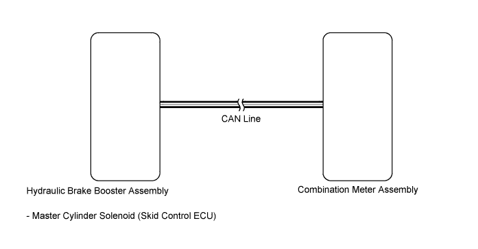

METER / GAUGE SYSTEM > Speedometer Malfunction |

| 1.CHECK CAN COMMUNICATION SYSTEM |
Check for DTCs (Click here).
| Result | Proceed to |
| CAN communication DTC is not output | A |
| CAN communication system (for LHD) DTC is output | B |
| CAN communication system (for RHD) DTC is output | C |
|
| ||||
|
| ||||
| A | |
| 2.CHECK ANTI-LOCK BRAKE SYSTEM (VEHICLE SPEED) |
Check for DTCs (Click here).
|
| ||||
| OK | |
| 3.PERFORM ACTIVE TEST USING INTELLIGENT TESTER (SPEEDOMETER) |
Operate the intelligent tester according to the display and select Active Test (Click here).
| Tester Display | Test Part | Control Range | Diagnostic Note |
| Speed Meter Operation | Speedometer | 0, 40, 80, 120, 160, 200, 240 or 280 | Perform the test with the vehicle stopped and engine idling. |
| Result | Proceed to |
| OK | A |
| NG (w/ Multi-information Display) | B |
| NG (w/o Multi-information Display) | C |
|
| ||||
|
| ||||
| A | |
| 4.READ VALUE USING INTELLIGENT TESTER (VEHICLE SPEED) |
Operate the intelligent tester according to the display and select Data List (Click here).
| Tester Display | Measurement Item/Range | Normal Condition | Diagnostic Note |
| Vehicle Speed meter | Vehicle speed/Min.: 0 (0), Max.: 255 (158) | Almost same as actual speed (when driving) | Unit: km/h (mph) |
| Result | Proceed to |
| NG | A |
| OK (w/ Multi-information Display) | B |
| OK (w/o Multi-information Display) | C |
|
| ||||
|
| ||||
| A | |
| 5.READ VALUE USING INTELLIGENT TESTER (WHEEL SPEED SENSOR) |
Operate the intelligent tester according to the display and select Data List (Click here).
| Tester Display | Measurement Item/Range | Normal Condition | Diagnostic Note |
| FR Wheel Speed | Wheel speed sensor FR reading/Min.: 0 (0), Max.: 326 (202) | Actual wheel speed | A similar speed is indicated on the speedometer. |
| FL Wheel Speed | Wheel speed sensor FL reading/Min.: 0 (0), Max.: 326 (202) | Actual wheel speed | A similar speed is indicated on the speedometer. |
| RR Wheel Speed | Wheel speed sensor RR reading/Min.: 0 (0), Max.: 326 (202) | Actual wheel speed | A similar speed is indicated on the speedometer. |
| RL Wheel Speed | Wheel speed sensor RL reading/Min.: 0 (0), Max.: 326 (202) | Actual wheel speed | A similar speed is indicated on the speedometer. |
| Result | Proceed to |
| NG (for LHD) | A |
| NG (for RHD) | B |
| OK (w/ Multi-information Display) | C |
| OK (w/o Multi-information Display) | D |
|
| ||||
|
| ||||
|
| ||||
| A | ||
| ||